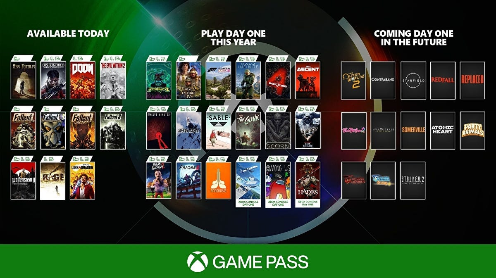
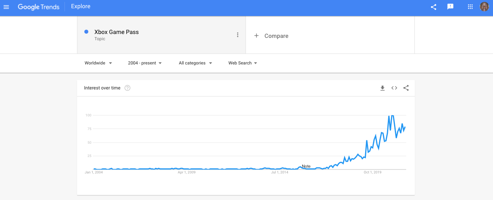

Xbox Game Pass
Example of a tech-enabled subscription-based service


Xbox Game Pass is a tech-enabled service that lets you play 100 games on multiple devices like PC, Xbox console, or Tablet. This subscription-based service is another example that illustrates that consumers love more services that are boxed and simply priced for them to get more with one simple recurring billing. These kinds of tech-enabled subscription-based services are the graals that Startup tech entrepreneurs are looking for and VC also because with this kind of business models revenues are clearly predictable. The Xbox game pass shows that big tech companies like Microsoft are also implementing subscription-based business models because we consumers love them and because of the predictability of revenues that investors are looking for.
Tech-enabled subscription-based services have made the success of startups like Netflix, ClassPass, hubspot, ZebFlow, and MasterClass and for gaming, you just Have Xbox Game Pass. Like Saas, I am tempted to categorize the Xbox Game pass as a Games as a Service GaaS.
You can rely on the skill of google at finding things for knowing that Games as a service is something that is being popular year over year. Here for example the trend of Xbox game Pass these past years

Microsoft is clearly giving a path that shows the importance of bundling multiples games then why Game studios aren't organizing themselves to bundle their games for us Gamers to get many of them at the best price instead of trying each one to market alone these great games that they have but which we could not all afford. This is more true for small size game studios run by passionate game developers that we call indies. Joining forces can be a real opportunity for indie game studios but someone or an organization should show up for this to happen. This organization can be Microsoft with its platform and console Xbox. Then it is possible to see into the coming future tech-enabled subscription-based services that will cleverly bundle great games built by indie games studios for us to play without spending lot of money.
I could be taxed to to biased and in favor of Microsoft if I don't talk about the tech-enabled subscription-based service launched by Steam in 2013. Like Microsoft, Valve offered a subscription-based services for gamers to enjoy multiple game with a single pricing plan. I have not data that allows me to go deeper into the economics of each of these tech enabled subscription sercn based service to say which one is more successful but the goal of this article is not about comparison of game as service solutions. This article attempts to highlight through the success of the Xbox Game Pass that you could see with the chart of the trend of searches in google how a tech enabled service or product can be successful if it is subscription based because of the recurrence of rvenues that the business models have.
for the services that I sent into this article are natively subscription based but one o fmy theories categorize some business models as being indirectly subscription based because of the behavior of the customers or users and successful advertising platform are like that. I promised in one of my last articles to explain why some business like advertising are indirectly subscription based business model. I hope I will keep my promise but that I can say now is that if you are likely to buy again if the last time you have bought it worked you are making the underling business model be indirectly subscription based
PS: I really made a huge breath for finishing this article because I had real pains writing it with this MacBook that is running very slowly despite the 4GB of memory installed in it. I have used it rather than this Desktop PC sitting here filled with 16GB of memory but just 2GB of them working because I am now into my bed. Scarcity of computational resource have postponed a lot of my works and is now starting to block me from writing. But This pain highlighted me that that some people like me don't only need a platform like buymeacoffee but Buy Me a Mac or Buy Me a PC also.